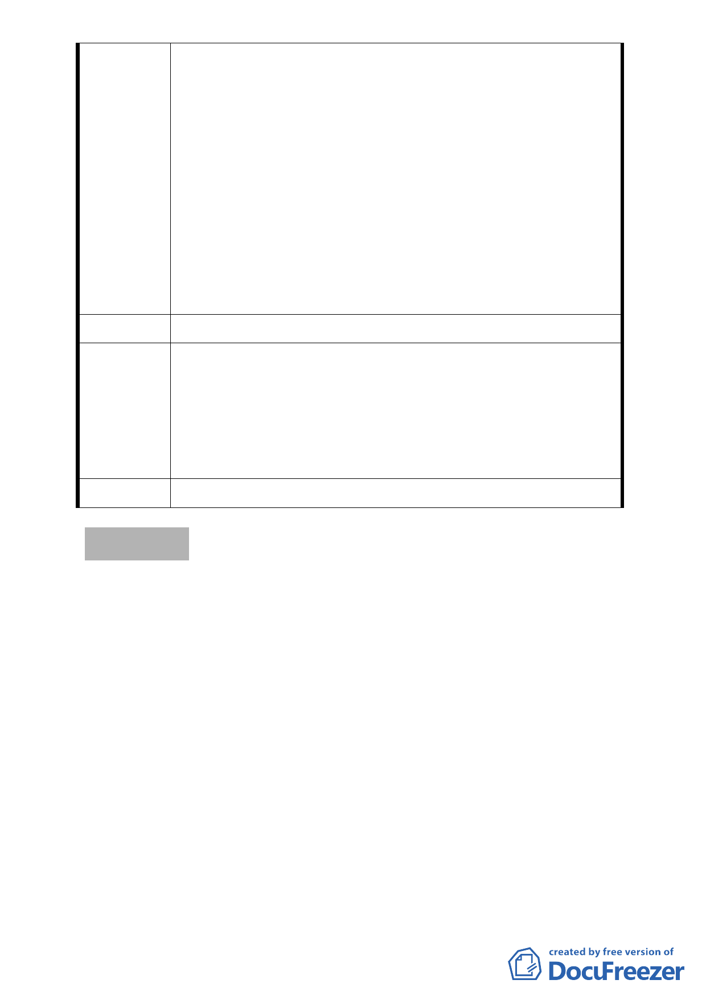

5、所以，想請益各位，如先暫不考慮2010台北好好看之計畫
內容該如何完成，而回歸核心思考，本區如何更新對於台
北環境是加分的，對住戶也是加分的，是否可以再思索看
看呢。住屋本是為了人而建造，且考量避免對整體環境的
傷害，本區真的要開放這麼大的開發體才是最好的選擇
嗎。希望您們可以幫我們住戶多加關注與思考，有哪些要
項應嚴格把關，為盼。
6、在這位於市中心，雖不敢稱黃金地段，但確實為許多人稱
羨的地段，環境維護在台北市中也屬不錯，在這樣倉促的
短短時間內，要住戶們作好這攸關財產處置的重大決定，
真的好嗎，在外界觀感上真的沒有問題嗎。希望您們可以
幫我們住戶多加關注與思考，為盼。
建 議 辦 法 （同上）
依市府都市發展局代表說明：「台北好好看申請案並未突破都
市更新法令之限制，都市更新條例中所規範實施者應具備之
專 案 小 組 條件與同意比例，也不會因申請台北好好看而賦予某一公司
審 查 意 見 特別之權利」，本案陳情民眾所關切之更新同意書效力、權利
變換程序及未來實施者之適任與否等議題，因非涉都市計畫
之變更和審議，請陳情民眾另循都市更新程序辦理。
委員會決議 同專案小組審查意見。
討論事項 三
案名：變更臺北市中正區河堤段六小段 581-1 地號等 62 筆土地道
路用地、第 2 種商業區、第 3-1 種住宅區及第 3 種住宅區為
道路用地、第 2 種商業區（特）、第 3-1 種住宅區（特）及第
3 種住宅區（特）暨劃定為都市更新地區細部計畫案
案情概要說明：
一、計畫範圍及面積：本計畫區位於中正區中正橋東側，北側鄰
接 4 米廈門街 144 巷，東側鄰接 10 米廈門街，南起 30.5 米水
源路及新店溪，西側鄰接 30 米中正橋，位處臺北縣市交通樞
紐。計畫面積 4,104 平方公尺。
二、本計畫範圍目前土地使用分區為第 2 種商業區、第 3 種住宅
區、第 3-1 種住宅區及道路用地。
- 37 -